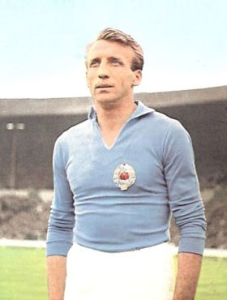
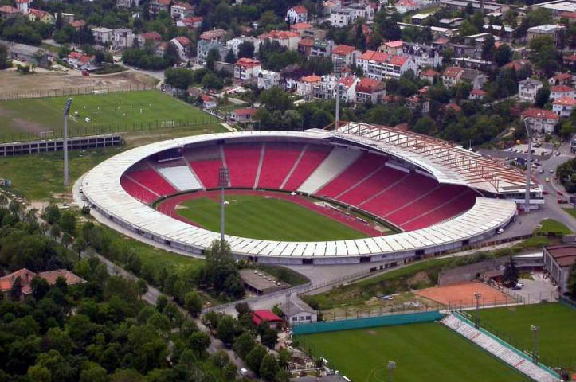

Историја
Настанак и прва титула (1945—1951)
Док је Други светски рат још увек трајао, у ослобођеним деловима земље извршена је целокупна реорганизација спортског живота. Велики број предратних клубова је престао да постоји, те су уместо њих оснивани нови. Један од најпознатијих фудбалских клубова који је тада угашен била је београдска Југославија.
Током фебруара 1945. године омладинци, чланови Уједињеног савеза антифашистичке омладине Србије, почели су припреме за оснивачку скупштину једног омладинског фискултурног друштва, са циљем да буде састављено од разних спортских секција. У духу тог времена носило је назив Омладинско–фискултурно друштво (ОФД) које је 4. марта прерасло у Црвену звезду. Иницијатива за оснивање спортског друштва потекла је од Зорана Жујовића и Слободана Ћосића, а међу оснивачима су још били и Небојша Поповић, Светозар Глигорић, Мира Петровић и Милован Ћирић. Новооснованом клубу су тада припали стадион, и клупске просторије СК Југославије, а стицајем околности боја клуба је била иста као и боја клуба свеже угашене СК Југославије, али са тотално другачијим конотацијама. Црвена звезда нема никаквих додирних тачака са СК Југославијом те се не може сматрати никаквим наследником истог клуба, а главни разлог је чињеница да је Црвена звезда устројена према тзв. совјетском фискутлурном (спортском) моделу. Тим је добио име после дуге расправе између тадашњих потпредседника спортског друштва Слободана Ћосића и Зорана Жујовића. После бројних предлога (Младост, Ударник, Торпедо, Динамо, Локомотива итд.), најзад је Ћосић рекао: „Да наше друштво назовемо Звезда!“, на шта је Жујовић спонтано додао: „Одлично, само, кад је Звезда - нека буде црвена.“ Са овим предлогом сви присутни су се са задовољством сложили, мада је било предлога да се клуб назове и Плава звезда. Одређене су и боје: црвено-плаво-бело са белом петокраком звездом на црвеној подлози дреса. Прво руководство клуба су чинили Ђорђе Паљић који је био председник, Зоран Жујовић и Слободан Ћосић који су обављали функције потпредседника, Љубиша Секулић је био секретар, економ Предраг Ђајић, а вођа фудбалске секције је био Коста Томашевић.
Прва утакмица је одиграна против Првог батаљона Друге бригаде КНОЈ-а. Звезда је добила тај меч са 3-2, а стрелац првог гола је био Коста Томашевић. Утакмица је одиграна на стадиону „Авала“ (бивше игралиште СК Југославије) пред око 3000 гледалаца. Седам дана касније Звезда је играла против играча британске армије и победила са 12:0.
Током 1945. године клуб је одиграо око 36 мечева. Црвена звезда је забележила победе у 30 мечева, играла нерешено 5 и изгубила један меч од Румуније у Темишвару 23. септембра 1945. године.
Након прве четири сезоне без иједног освојеног трофеја, Црвена звезда је освојила Куп Југославије 1948. победом од 3:0 у финалу над Партизаном. Тај успех је поновљен и у наредне две године, победама у финалима прво над Нашим крилима (3:2), а затим и над загребачким Динамом (3:0). Низ великог успеха је настављен и 1951. када је клуб по први пут постао првак Југославије. Иако се на само три кола пред крај првенства чинило да је првенство решено јер је Динамо имао пет бодова више у односу на Звезду, а тада су се за победу добијала два бода. Прво је Звезда искористила пораз Загрепчана од Сарајева, а затим их је и међусобном дуелу савладала. На тај начин им је пред последње коло пришла на само бод заостатка. У том последњем колу БСК је успео да Динаму узме бод, а Црвена звезда је успела да добије Партизан са 2:0. О титули првака је одлучила боља гол-разлика која је била на страни Звезде.
Педесете - прва ера доминације (1952—1958)

Бора Костић, најбољи стрелац
Црвена звезда је наредну титулу освојила у сезони 1952/53., али су се праве промене у клубу догодиле средином те деценије. Тада је на место председника клуба дошао Душан Благојевић, Слободан Ћосић је постао генерални секретар, а на месту техничког директора се нашао Аца Обрадовић, познатији под надимком „Доктор О“.
Они су створили генерацију играча која је пет година доминирала домаћим првенством и која је остварила значајне резултате и на међународној сцени. У Европа купу I, ова генерација је успела да стигне до полуфинала у сезони 1956/57. Након тога је освојен и Дунавски куп 1958. Тим у коме су играли фудбалери као што су Беара, Дурковић, Станковић, Поповић, Митић, Костић, Шекуларац, освојили су четири титуле првака и два Купа, и при томе ни у једној од тих пет сезоне нису остали без трофеја.
Звездина игра била је брза и нападачка, што је клубу веома брзо донело велику популарност у земљи и свету. Паралелно са успесима на терену, Обрадовић је оформио основу стручног рада на којој ће се базирати каснији велики успеси Црвене звезде.
Криза и нови стадион Црвене звезде (1958—1966)

Стадион "Рајко Митић"
Крај педесетих био је први период доминације једног клуба на југословенској фудбалској сцени. У наредних седам сезона, Црвена звезда је успела да освоји само једну титулу и један куп, што није било довољно за клуб са реномеом и амбицијама какав је Црвена звезда. Пласман током ових сезона је био најгори у историји клуба (укључујући и седмо место 1963). Црвена звезда је чак четири пута завршавала испод трећег места на табели (пре и после тога, Црвена звезда никада није падала испод трећег места у СФРЈ, СРЈ, СЦГ и Србији). Чак и тада, било је јасно да је Црвена звезда далеко најпопуларнији клуб у земљи, а њени порази су тешко падали навијачима. Тако да се дешавало да су у неким приликама навијачи Звезде улетали на терен и рушили голове. У сезони 1962/63, клуб је успео да постигне само 21 гол, што је, на пример, половина износа који је Војводина постигла, иако је она завршила пет места ниже на табели.
Са друге стране, Црвена звезда је остварила добре резултате на међународној сцени. У Купу сајамских градова 1961/62, Црвена звезда је у четвртфиналу избацила Еспањол, док је у полуфиналу за противника добила Барселону. У обе утакмице Барселона се показала као бољи тим и Црвена звезда је елиминисана. Међутим, после само осам месеци, каталонски клуб је поражен од Црвене звезде у истом такмичењу, само овај пут у другом колу. На крају чак ни победа од 2:0 код куће против Роме у четвртфиналу није била довољна за пролаз даље, јер је први меч Рома добила са убедљивих 3:0.
Поред међународних успеха, Црвена звезда је крајем 1959. почела са изградњом новог стадиона на месту старог. У наредне четири године, Црвена звезда је своје домаће утакмице играла на стадиону ЈНА и Омладинском стадиону (ово се може узети као један од разлога за лоше резултате у овом периоду). Нови стадион је отворен 1. септембра 1963. утакмицом Црвене звезде и Ријеке (2:1), а временом је стадион, због свог великог капацитета и атмосфере коју су навијачи стварали, добио надимак Маракана, по чувеном стадиону Маракана у Бразилу. Током прве сезоне постојања стадиона, Црвена звезда је под вођство тренера Милорада Павића освојила дуплу круну. Кључни моменат десио се 1966, када је нови тренер постао Миљан Миљанић. У наредних осам година, Миљанић је трансформисао Црвену звезду у високоцењени европски клуб. До тада југословенски фудбал је прошао кроз уводну фазу тестирања и доминација Црвене звезде и Партизана се наставила. У наредних 25 година Звезда ће бити константан фаворит за трофеје, док ће се само њихови противници мењати. Године 1968, Црвена звезда је освојила свој други трофеј Митропа купа, а након освајања се повукла из Митропа купа да би се више посветила другим европским такмичењима.
Миљанићева ера (1966–1975)
Миљан Миљанић је био фудбалер Црвене звезде током педесетих, али је славу постигао тек за време његовог мандата као главног тренера Црвене звезде, где је постављен у лето 1966. године. У првој сезони, он је потпуно променио поставу играча и клуб је завршио пети на табели, исто као и претходне године. Након тога, генерација коју је предводио Драган Џајић, један од најбољих југословенских фудбалера свих времена и један од најбољих левих крила света, почела је да оставља дубок траг у југословенском фудбалу. То је било први пут да је Црвена звезда освојила три првенствене титуле заредом, а сваки навијач Звезде је знао имена Дујковића, Ђорића, Дојчиновског, Карасија, Аћимовића, Лазаревића, Кривокуће и Остојића. У то време Црвена звезда је такође постала звучно име на европском нивоу, постављајући стандарде које је мали број клубова са истока могао да прати. Фокус на Куп Југославије 1971. довео је до тога да у сезони 1970/71. клуб забележи свој други најгори пласман икад, шесто место, међутим тај утисак је побољшан освајањем Купа. Поред освајања Купа, Црвена звезда је такође стигла и до полуфинала у Купу европских шампиона 1970/71, где ју је ипак избацио грчки Панатинаикос. У првом мечу, Црвена звезда је пред 100.000 својих навијача у Београду победила Грке са убедљивих 4:1 и изгледало је да се налази одличној позицији, међутим, у реваншу у Атини поражена је са 3:0 и тако је због гола у гостима пропустила још једну прилику да заигра у финалу. Појавили су се неки нови играчи, као што су Владимир и Огњен Петровић, Богићевић, Филиповић и Јанковић.
Осим што је доносила много радости својим навијачима, у тој ери, Црвена звезда је била клуб који се гледао са задовољством. Током осам година под вођством Миљанића, она је седам пута била клуб са највише постигнутих голова (Вележ је 1972. постигао један гол више). У Купу европских шампиона 1973/74. Црвена звезда је у осмини финала избацила Ливерпул, а победивши Ливерпул она је постала тек други страни клуб који је успео да победи Ливерпул на Енфилду (после Ференцвароша у Купу сајамских градова 1967/68.) и једини клуб који је победио Ливерпул на домаћем терену у Купу шампиона у 20. веку. Међутим, Црвена звезда је већ у четвртфиналном двомечу изгубила од Атлетико Мадрида укупним резултатом 2:0. Следеће сезоне, Црвена звезда се састала са Реал Мадридом. Штампа је меч прогласила као сусрет Џајића и Камача, пошто је Џајић тада био један од најбољих левих крила а Камачо један од најбољих одбрамбених играча. У првом мечу, Црвену звезду је на Сантијаго Бернабеу дочекао Миљан Миљанић, који је сада водио Реал, као и 125 хиљада навијача, и поражена је резултатом 2:0. У Београду пред 100 хиљада гледалаца, Црвена звезда је успела да поравна укупан резултат головима Џајића и голмана Петровића. Црвена звезда је коначно победила са 6:5 у пеналима и тако се по први пут пласирала у полуфинале Купа победника купова. У полуфиналу је за противника добила Ференцварош из Будимпеште. Црвена звезда је први меч у гостима изгубила са 2:1, а реванш меч ће увек бити запамћен као меч са највећом посетом на стадиону Црвене звезде. Иако је званично продато 96.070 улазница, процењује да је на стадиону било око 110.000 гледалаца. Сви су отишли кући разочарани, јер су гости голом из пенала у 83. минуту поставили коначан резултат на 2:2 и тако је Ференцварош отишао у финале.
Одржавање доминације - прво европско финале (1976–1986)
Како то обично бива, када велики тренер оде, то подразумева пад у резултатима, а две сезоне након одласка Миљанића су прошле мање успешно за Звезду. Тек по доласку Гојка Зеца на позицију тренера клуб се стабилизовао и Црвена звезда је 1977. поново славила освајање титуле националног првака. Био је то увод у еру Бранка Станковића, чија је владавина као главног тренера трајала четири године, а у којој је Црвена звезда освојила три трофеја и играла прво велико европско финале. Након што је Драган Џајић прешао у Бастију, тим су предводили четврта „Звездина звезда“ Владимир Петровић Пижон, Душан Савић и Милош Шестић.
Прва сезона са Гојком Зецом на челу је била буквално права демонстранција силе, титула је освојена са предношћу од 9 бодова у односу на ривале, што је, до тада, била највећа разлика у историји лиге. Звездини нападачи, предвођени Зораном Филиповићем, постигли су 67 голова против њихових ривала у лиги (следећи на листи иза њих је био бањалучки Борац са 53 постигнутих голова). У наредној сезони, Црвена звезда је освојила друго место у првенству, чиме је отворен пут за велики наступ у сезони 1978/79. Купа УЕФА. Након што је избацила тимове као што су Арсенал, Вест Бромвич албион и Херта Берлин, Црвена звезда је по први пут заиграла у финалу неког европског такмичења. А тамо, Црвена звезда се састала са Борусијом Менхенгладбах, која је одиграла пет европских финала од 1973—1980. Немце је у првом мечу у Београду дочекало око 90 хиљада навијача, и Црвена звезда је добро кренула голом Шестића у 21. минуту, али је Јуришић аутоголом у 60. минуту дао Борусији психолошку предност пред реванш. Ова утакмица је одиграна на Рајн стадиону у Диселдорфу, где је италијански судија Микелоти досудио спорни пенал за Немце у 15. минуту, а дански фудбалер Алан Симонсен је запечатио судбину Црвене звезде. Борусија је тако у финалном двомечу победила укупним резултатом 2:1.
Станковић је прву титулу првака као тренер (као играч је четири пута био првак) освојио 1980, док је Звезда у финалу Купа поражена од загребачког Динама па јој је измакла дупла круна, а наредне сезоне титула у првенству је одбрањена. Период од једанаест година без трофеја у Купу, убедљиво најдужи у клупској историји, завршио се у пролеће 1982, када је Црвена звезда у финалу победила Динамо Загреб укупним резултатом 6:4 (2:2 у Загребу и 4:2 у Београду). До тада, догодила се прва промена тренера током сезоне још од педесетих, Стеван Остојић је заменио Станковића. У овом периоду, Црвена звезда је два пута стизала до четвртфинала Купа европских шампиона. Године 1981. ту ју је зауставио милански Интер, а 1982. Андерлехт.
Гојко Зец се 1983. вратио у клуб, затекавши само једног играча из шампионске генерације коју је тренирао 1977 – Милош Шестић. Зец је слично понови успех из његовог претходног мандата, освојивши титулу у првој сезони. Наредну сезону 1984/85. Црвена звезда је завршила на четвртом месту на табели, док је након три године поново освојила Куп, победивши у финалу Динамо Загреб. Посебно након што су Петровић и Савић отишли током сезоне 1982/83, Шестић је постао лидер нове генерације, чији су играчи били Ивковић, Елснер, Бошко и Милко Ђуровски, Мусемић, Миловановић, Јањанин и Мркела. Крај ере Гојка Зеца поклопио се са највећим скандалом у историји југословенског фудбала, Шајберовим случајем, због којег је држава имала два првака у једној сезони. Црвена звезда је прво изгубила па поново освојила титулу 1986, пре него што јој је одузета за зеленим столом. Црвена звезда је исте сезоне стигла и до четвртфина Купа победника купова, где је поражена од Атлетико Мадрида.
Клупски шампион Европе и света (1986–1991)
Стварање тима
Планови везани за европске успехе Звезде и њено јачање у Европи почели су да се спроводе средином 1980-тих година. Звезда је до тада играла солидно против иностраних тимова. Играчи који су чинили први тим су били из омладинског тима или су довођени из мањих клубова у земљи. Тадашњи руководећи људи клуба Драган Џајић и Владимир Цветковић донели су одлуку да треба постојећим омладинцима прикључе најквалитетније домаће играче. Тиме би Црвена звезда могла да парира најјачим европским тимовима и да буде кандидат за европске трофеје.
Већ 1986. године креће реализација њиховог плана, и прва појачања у Звезди су били Борислав Цветковић и Миливој Брачун из Динама, а из нишког Радничког дошао је Драган Стојковић Пикси. Године 1987. у Црвену звезду стижу Драгиша Бинић и Роберт Просинечки. Дејан Савићевић и Дарко Панчев долазе 1988. године. Белодедић се прикључује клубу из румунске Стеауе 1989. године али право наступа стиче тек у пролеће 1990.
У сезони (1988/1989) Црвена звезда је играла против италијанског Милана (који је те сезоне постао европски првак), где су обе утакмице завршене нерешеним резултатом 1-1 а Милан је прошао на пенале. У домаћем првенству шампион је постала новосадска Војводина. Тако је Црвена звезда у сезони 1989/1990 играла у Купу УЕФА где је трећем колу испала од Келна укупним резултатом 3-2.
Лета 1990. године Драгослава Шекуларца дотадашњег тренера који је освојио титулу државног првака мења Љупко Петровић. Тиму се поново прикључује и Владимир Југовић који је до тада био на позајмици у Раду. Међутим Звезду напушта њен дотадашњи капитен Драган Стојковић који одлази у Олимпик из Марсеља, тима са којим ће Звезда играти у финалу КЕШ-а наредне године. Највеће појачање стиже из Војводине, Синиша Михајловић, чији је траннсфер био рекордан у тадашњој Југославији. Поход на светски врх могао је да почне.
Сезона 1990/91
Црвена звезда је у поход на Куп европских шампиона кренула са великим амбицијама. У претходних четрнаест година редовно је играла у Европи и на пролеће. У то време била је један од најбољих тимова из источне Европе.
У Купу шампиона те сезоне најјачи тимови су били Бајерн Минхен, Реал Мадрид и Милан. У првом колу Црвена звезда је добила швајцарски тим Грасхоперс, који је био предвођен Отмаром Хицфелдом (освојио Лигу шампиона са Борусијом Дортмунд (1997) и Бајерном (2001)). У првом мечу на београдској Маракани било је 1:1 (Петер Кецле - Драгиша Бинић). У другом мечу у Цириху Црвена звезда је убедљиво победила са 1:4 (Кецле- Просинечки (2 гола), Панчев, Радиновић). У следећем двомемечу Црвена звезда је играла против шкотског тима Глазгов Ренџерс. У првом дуелу било је 3:0 за Звезду (Браун аутогол, Роберт Просинечки, Дарко Панчев). У другом мечу на стадиону Стадион Ајброкс било је 1:1 (Меккоист - Панчев) тако да је Црвена звезда прошла даље и поново дочекала пролеће у Европи.
Тада је у четвртфиналу извучен тим из Источне Немачке, Динамо Дрезден. Први меч се опет играо у Београду и Звезда га је добила са 3-0 (Просинечки, Бинић, Савићевић). У другом мечу дошло је до инцидента који су изазвали навијачи домаћег тима тако да је УЕФА регистовала тај меч са 3-0 у Звездину корист и тако се српски клуб пласирао у полуфинале. До прекида Звезда је водила са 1-2 (Гичов- Савићевић, Панчев).
У полуфиналу извучен је Бајерн Минхен а у другој утакмици су играли Олимпик Марсељ и Спартак Москва. У првом мечу који је игран на Олимпијском стадиону у Минхену било је 1-2 за Црвену звезду (Волфарт- Панчев, Савићевић). Друга утакмица на Маракани остаће упамћена као један од најнеизвеснијих дуела које је Звезда одиграла на свом стадиону. Резултат је на крају био 2-2 (Михајловић, Аугенталер (аутогол) - Аугенталер, Бендер).
Бари
Највећи успех Црвене звезде је везан за 1991. када је 29. маја у италијанској луци Бари постала први клуб из Југославије (тадашње СФРЈ) који је освојио наслов првака старог континента. Утакмица је играна на тада новом Стадиону Свети Никола који је изграђен за потребе Светског првенства у фудбалу које је одржано 1990. године.
Након победе над Бајерном из Минхена, тим се у потпуности окренуо утакмици финала коју је Звезда играла против Француског шампиона Олимпика из Марсеља. Екипа је отпутовала у Италију недељу дана пре меча. Ово је омогућило да се тим спреми у миру и тишини. Од саме утакмице се очекивало да ће бити офанзивна зато што је Звезда за дотадашњих 8 утакмица дала 18 голова а Марсељ је постигао 20 голова на истом броју мечева. Међутим тренери оба тима су се одлучили за дефанзивну тактику.
Регуларни део меча завршен је резултатом 0:0. Затим су се играли продужеци где такође није било голова. Потом се приступило пеналима. За Црвену звезду шутирало пет играча и сви су погодили мрежу (Роберт Просинечки, Драгиша Бинић, Миодраг Белодедић, Синиша Михајловић и Дарко Панчев). За француски тим је шутирало четири играча. Играчи Црвене звезде су први шутирали пенале. За Марсељ је први пенал шутирао Мануел Аморос и промашио, тако да пети играч за Олимпик није ни могао да шутира после погодка Дарка Панчева и резултата 5:3 (Мануел Аморос-промашио пенал, Бернар Казони, Жан-Пјер Папен, Карлос Мозер). Црвена звезда је победила са 5:3 после бољег извођења једанестераца. То је значило да је заједно са румунском Стеауом постала једини тим из источне Европе који је до данас освојио ово такмичење.
Токио
Црвена звезда је 8. децембра исте године на Националном стадиону у Токију победила чилеански клуб Коло-Коло резултатом 3:0 и постала фактички клупски првак света, јер није било другог такмичења који би објединио у то време најјаче екипе на свету. Након успеха у Барију тим је напустио значајан број играча (Бинић, Маровић, Просинечки, Шабанаџовић, Стојановић) као и тренер Љупко Петровић. Међутим Црвена звезда је још увек имала завидан играчки кадар. Црвена звезда је друго полувреме играла без Дејана Савићевића који је искључен у 43. минуту. Иако ослабљена, Звезда је забележила убедљиву победу од 3:0. Голове су постигли Владимир Југовић. два (19. и 59. минут) и Дарко Панчев (72. минут).
Црвена звезда је играла у саставу: Милојевић, Радиновић, Најдоски, Стошић, Васиљевић, Југовић, Белодедић, Ратковић, Панчев, Михајловић, Савићевић. Тренер је био Владица Поповић.
СР Југославија и Србија (1992–1999)
На самом почетку 1992. године, клуб је био на врхунцу славе као шампион Европе и света али такође и ослабљен. Цела шампионска генерација из Барија више није играла за црвено беле. Међутим, упркос томе Звезди су даване прилично добре шансе да одбрани титулу европског шампиона. У домаћем првенству, велики ривали Динамо и Хајдук више нису играли у заједничкој лиги, баш као и остали клубови из Хрватске и Словеније. Првенство Југославије играно је на самој ивици регуларности, због смањења лиге и избијања рата у Босни и Херцеговини. Црвена звезда је одбранила титулу, а истовремено то јој је био трећи тријумф за редом у домаћем првенству (први пут након Миљанићеве ере). Међутим, финале купа је освојио Партизан и то је била назнака да тешки дани за клуб тек долазе.
Након тога долази тешко доба заклуб, пре свега због међународних санкција према СР Југославији, те звезда није имала прилику да брани тешко стекнуто име у Европи. Додатно сви су желели да скину Европског шампиона и са домаћег трона. Остаће забележено да су са врха власти активно учествовали у раду осталих клубова. У периоду између маја 1992. године и маја 2000. године, само једна шампионска титула је прослављена на Маракани. Двадесети пехар државног првака стигао је 1995. године. Донела ју је још једна велика генерација играча, која због санкција, рата и других великих криза које су задесиле Србију током деведесетих није могла да покаже свој пун квалитет. Тада су за Звезду играли Милојевић, Стојковски, Ђоровић, Стефановић, Сакић, Живковић, Крупниковић, Ковачевић, Петковић и многи други. Те године забележена је и победа у 100-том вечитом дербију од 2:1. На клупи је поново седео Љупко Петровић.
Прва лига СР Југославије није више имала онај квалитет као претходно такмичење а и број гледалаца је због већ поменутих разлога значајно опао. Како су се деведесете приближавале крају, тако су и нерегуларности у лиги достизале свој врхунац. Шампион у сезони 1997/98 је био Обилић, тим који је те исте сезоне дебитовао у лиги. Следеће првенство није завршено због рата на Косову и Метохији а Црвена звезда је завршила на трећој позицији, што је био најлошији пласман клуба у претходних двадесет година. Међутим, за то време ипак је освојено пет држаних купова.
Време успеха и кризе (1999 - данас)
Лето 1999. године означава нови почетак за клуб. Након завршетка рата на Космету, Црвена звезда осваја свој седамнаести куп у историји победом против Партизана 4:2. Међутим, после лошег старта у следећој сезони, Милољуб Остојић бива смењен, а тим преузима Славољуб Муслин. Као члан добре генерације играча са почетка осамдесетих за коју су наступали Владимир Петровић Пижон и Дуле Савић, он је донео нову филозофију у екипи Црвене звезде. Током две сезоне проведене у Звезди, постављен је рекорд, где је број примљених голова преполовљен. Црвена звезда је примила само 19 голова на 40 утакмица у првенству (сезона 1999-2000). Титула првака практично је освојена на Ђурђевдан, када је Обилић поражен на „Маракани“, а Партизан је у том колу успео да освоји само један бод против Радничког из Крагујевца. У марту, априлу и мају Црвена звезда је победила на свих 20 утакмица у лиги и купу.
Следеће сезоне, Муслин је још увек предводио клуб. Шампионска титула је одбрањена али трофеј у купу није. Муслин напушта клупу у септембру 2001. године, после чега Црвена звезда неће успевати да освоји тиутлу наредне две сезоне. Ипак Славољуб Муслин се враћа на клупу у лето 2004. године. Током ове сезоне, клуб је поставио нови рекорд са само 13 примљених голова на 30 утакмица и освојио је своју двадесетчетврту титулу.
Током лета те године, клуб је поново предводио Љупко Петровић, трећи пут у својој тренерској каријери. После добрих припремних утакмица, клуб је ушао са великом надом у нову сезону али на европској сцени дошли су тешки порази од ПСВ Ајднховена и Зенита из Санкт Петербурга. Титула је изгубљена те сезоне, као и куп од Железника.
Током лета 2005. године, Драган Џајић напушта фотељу председника после више од 20 година на челу клуба. Звездина трећа звезда је замењена петом звездом Црвене звезде, Драганом Стојковићем. Клуб преузима Валтер Зенга и то је било први пут у историји да страни тренер предводи Звезду. Две године за редом, тим је освајао дуплу круну у домаћем првенству. Звезда је учествовала у Лиги Европе 2007. године.
Почетком јуна 2010. је покренуто учлањивање у клуб, а од 22. октобра 2010. новим Статутом клуба сваком члану са плаћеном чланарином је омогућено учешће у избору новог председника. 9. децембра 2010. године, тренер Црвене звезде је постао Роберт Просинечки, члан генерације која је освојила титулу првака Европе и света. Пре него што је преузео црвено-беле, Просинечки је радио као асистент селектору Хрватске Славену Билићу. У почетку је било питање да ли ће уопште моћи да се бави тренерским послом у Звезди пошто није имао тренерску лиценцу. Те зиме између осталих, црвено-беле су појачали: Евандро, Борха, Калуђеровић, Ади итд. Звезда је у том тренутку била друга на табели и заостајала за Партизаном пет бодова. Ипак на крају ове сезоне (2010/11) Звезда није успела да узме титулу и завршила је као друга на табели. У последњем колу је победила Војводину са 0:2, на двадесетогодишњицу тријумфа у Барију. Црвена звезда је овом позицијом на табели обезбедила да игра у трећем колу квалификација за Лигу Европе. Као противника добила је летонску екипу Вентспилс. Прву утакмицу, Звезда је добила у гостима са 2:1, a у другој је тријумфовала резултатом 7:0. Постоји једна занимљивост у вези са путовањем на прву утакмицу. Наиме, играчи и стручни штаб црвено-белих летели су истим авионом којим су играчи генерације 1991 летели за Бари на финалну утакмицу Купа европских шампиона. Следећи противник кога је Звезда требала да победи да би се нашла у Лиги Европе био је Рен. Међутим, тим из истоименог француског града је победио у обе утакмице. У првом мечу на Маракани било је 1:2, а у другом 4:0 за Рен. У сезони 2011/12. Црвена звезда је поново завршила на другом месту у Суперлиги, али је успела да освоји 3 трофеј Купа Србије, укупно 24, победивши у финалу чачански Борац са 2:0.
14. новембра 2012. председник клуба Владан Лукић је након три и по године на челу клуба поднео оставку, а истог дана је формирана радна група на челу са Драганом Џајићем која је управљала ФК Црвена звезда до нових избора а Џајић је 22. децембра изабран и за пуноправног председника клуба. Циљ радне групе је био пре свега ревитализација клуба који је био у огромним дуговима. Ипак, спортски циљеви су и даље остали исти јер је то обавезе према многобројним навијачима. Иако свих година без великих успеха, Звезда је важила за најгледанији тим не само у Србији већ и шире.
У лето 2013. године у клуб стижу велика појачања и видела се жеља да се поново врати на врх домаћег фудбала. Поред новог тренера Слаавише Стојановића највеће име је Милош Нинковић који је испунио дечачки сан и заиграо за клуб који воли. Иако је сезона 2013/14. кренула необећавајуће, где је у првом делу сезоне забележено неколико тешких пораза, ипак у наставку је цео тим одиграо знатно боље. Нови тренер Славиша Стојановић, је поред свих проблема у клубу успео да извуче максимум од својих играча. У другом делу сезоне је забележено 13 узастопних победа и тако је Црвена звезда успела да се поново попне на трон. Током сезоне нарочито су се истакли Печник, Мрђа, Милијаш па и голман Бајковић. Ипак овај успех није имао одговарајући ефекат, јер је УЕФА због дуговања избацила Звезду из Европских такмичења.
У јуну 2015. године Миодраг Божовић преузима Звезду, после оставке Ненада Лалатовића. У сезони 2015/ 2016 је освојена 27 титула првака државе. Црвена звезда је на лето након освојене титуле играла квалификације за Лигу шампиона. У другом колу квалификација елиминисан је малтешки тим Валета. У трећем колу играно је са бугарским тимом Лудогорец, где је у првом мечу у гостима било 2:2 а код куће Звезда је изгубила са 2:4. Звезда је ипак наставила такмичење у плеј оф УЕФА Лиге Европе против Сасула. У првом мечу у Италији било је 3:0 за домаћи тим а у другом сусрету 1:1 тако да је београдски тим завршио такмичење у Европи.
У августу 2017. године, Црвена звезда се пласирала у Лигу Европе након десет година савладавши у трећем колу квалификација Спарту Праг резултатом 3:0. Затим, у плеј-офу славила је против руског Краснодара. У првом мечу у гостима Звезда је изгубила са 2:3, а код куће је победила са 2:1. У групној фази Х, Звезда је играла против Арсенала, БАТЕ Борисова и Келна. 7. децембра 2017, фудбалери Црвене звезде савладали су у „мечу деценије“, у последњем колу Х групе, екипу Келна и изборили после 25 година пласман у нокаут фазу неког европског такмичења. Стрелац победоносног гола био је Славољуб Срнић у 22. минуту меча у Београду. У шестнаестини финала, фебруара 2018, Црвена звезда дочекује ЦСКА Москву где је Звезда код куће одиграла нерешено, а у гостима је поражена са 1-0.